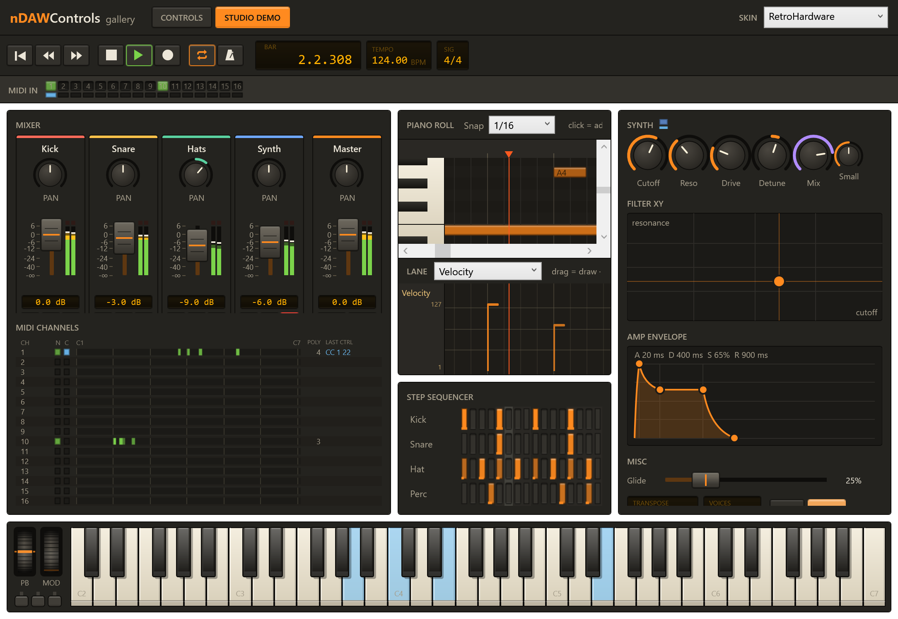

Skins
Five built-in skins, switchable while the app runs, for the whole app or one panel. And your own skin from a copy of a file.
#The built-in skins
#DawSkin.Graphite
Dark graphite with an orange accent. The default.

#DawSkin.Studio
Dark blue-grey with a blue accent.

#DawSkin.LightClassic
Light grey with a blue accent and light knobs.

#DawSkin.RetroHardware
Warm dark brown with orange accents and amber displays.

#DawSkin.HighContrast
Black and white with a yellow accent and strong outlines.

#Switching skins
For the whole app:
using nDAWControls.Skinning;
SkinManager.Apply(DawSkin.Studio);
SkinManager.SkinChanged += (s, e) => Debug.WriteLine(SkinManager.CurrentSkin);A skin picker in a settings window:
<ComboBox x:Name="skinPicker" SelectionChanged="OnSkinChanged"/>skinPicker.ItemsSource = Enum.GetValues<DawSkin>();
skinPicker.SelectedItem = SkinManager.CurrentSkin ?? DawSkin.Graphite;
void OnSkinChanged(object sender, SelectionChangedEventArgs e)
{
if (skinPicker.SelectedItem is DawSkin skin) SkinManager.Apply(skin);
}#A skin for one part of a window
Set the attached property SkinManager.Skin on any element to skin its subtree independently, for example a dark mixer in a light app:
<Border daw:SkinManager.Skin="Graphite">
<StackPanel Orientation="Horizontal">
<daw:ChannelStrip TrackName="Drums"/>
<daw:ChannelStrip TrackName="Bass"/>
</StackPanel>
</Border>Or merge a skin in XAML yourself:
<Application.Resources>
<ResourceDictionary>
<ResourceDictionary.MergedDictionaries>
<ResourceDictionary Source="pack://application:,,,/nDAWControls;component/Skins/RetroHardware.xaml"/>
</ResourceDictionary.MergedDictionaries>
</ResourceDictionary>
</Application.Resources>#Using skin colours in your own UI
Every colour of a skin is a resource key in DawSkinKeys. Use them with DynamicResource and your windows follow the skin too:
<Window Background="{DynamicResource {x:Static daw:DawSkinKeys.WindowBackground}}"
TextElement.Foreground="{DynamicResource {x:Static daw:DawSkinKeys.Text}}"
TextElement.FontFamily="{DynamicResource {x:Static daw:DawSkinKeys.FontFamily}}">
<Border Background="{DynamicResource {x:Static daw:DawSkinKeys.PanelBackground}}"
BorderBrush="{DynamicResource {x:Static daw:DawSkinKeys.PanelBorder}}" BorderThickness="1">
<TextBlock Text="SYNTH" Foreground="{DynamicResource {x:Static daw:DawSkinKeys.TextDim}}"/>
</Border>
</Window>DynamicResource, not StaticResource. Only dynamic references follow a skin change.#Changing a few colours
Override single keys in your own resources. They win over the skin:
<Application.Resources>
<SolidColorBrush x:Key="{x:Static daw:DawSkinKeys.Accent}" Color="#FF00C2A8"/>
<SolidColorBrush x:Key="{x:Static daw:DawSkinKeys.LedSolo}" Color="#FF4CC2FF"/>
</Application.Resources>#Making your own skin
#Copy a skin file
Copy one of the files in src/nDAWControls/Skins into your app, for example as
Skins/Ocean.xaml, with build action Page.#Change the colours
Edit the colours. Change
xmlns:skintoclr-namespace:nDAWControls.Skinning;assembly=nDAWControls, because the file now lives in your assembly.#Apply it
C#SkinManager.Apply(new Uri("pack://application:,,,/MyApp;component/Skins/Ocean.xaml"));#Check it
SkinManager.FindMissingKeyslists the keys your dictionary doesn't define, which is handy in a unit test:C#var skin = new ResourceDictionary { Source = new Uri("pack://application:,,,/MyApp;component/Skins/Ocean.xaml") }; Assert.Empty(SkinManager.FindMissingKeys(skin));
Frames, LEDs and notes drawn by the nine-patch renderer are generated from these colours, so they follow automatically.
#Skin keys
The most used keys, by area. Every skin defines all of them; see a skin file for the complete list with values.
| Area | Keys |
|---|---|
| Window and text | WindowBackground, PanelBackground, PanelRaised, PanelBorder, Text, TextDim, Accent, AccentForeground, Focus |
| Knobs | KnobBody, KnobBodyBorder, KnobTrack, KnobIndicator, KnobArcThickness |
| Faders | FaderGroove, FaderFill, FaderThumb, FaderThumbBorder, FaderThumbLine |
| Meters and scales | MeterBackground, MeterSafe, MeterWarning, MeterDanger, MeterPeakHold, MeterClipOn, MeterClipOff, ScaleTick, ScaleText |
| Buttons and LEDs | ButtonBackground, ButtonHover, ButtonPressed, ButtonBorder, LedMute, LedSolo, LedArm, LedMonitor, LedLitForeground, TransportPlay, TransportRecord |
| Displays | LcdBackground, LcdBorder, LcdText, LcdTextDim, LcdFontFamily |
| Keyboard | KeyWhite, KeyBlack, KeyBorder, KeyPressed, KeyHighlight |
| Piano roll | GridBackground, GridBlackRow, GridBarLine, GridBeatLine, GridSubLine, NoteFill, NoteSelectedFill, NoteBorder, NoteText, Playhead, RulerBackground, RulerText, Selection |
| Step sequencer | StepOff, StepOn, StepGroupBackground, StepPlayhead |
| XY pad and envelope | PadBackground, PadGrid, PadPuck, PadCrosshair, EnvelopeStroke, EnvelopeFill |
| Wheels and pedals | WheelSlot, WheelBody, WheelRib, WheelMarker, PedalBody, PedalLit |
| MIDI activity, tracks and lanes | ActivityNote, ActivityControl, ActivityOff, ActivityRowAlt, TrackSelected, LaneValue, LaneFill |
| Shape and fonts | CornerRadius, FontFamily |